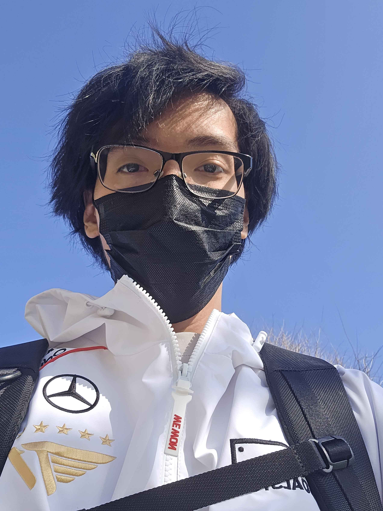

I am a senior ATEC student with a general focus in the industry. Among my field, I have a particular interest in technical art like Rigging and digital editing, but still possess a powerful skillset in other aspects. In my free time I indulge in writing and day-dreaming for copius amounts of hours.
